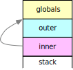
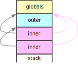

Type Checking
Functions, Scopes, and Nesting
Chapter six explained how to use actions to interpret or compile arithmetic expressions. Simple variables, input, output, and control structures were added, resulting in a little language which was compiled into JavaScript functions, or into machine instructions for a stack machine simulated in JavaScript.
This chapter adds specific language features to the little language
and shows how to implement them, primarily for the stack machine.
All classes are available from the module Seven
which is built into the practice page.
Syntactic Type Checking
The result types of arithmetic and other operations depend on both, the operators, and the types of the operand values.
Dynamically typed languages such as JavaScript tend to allow operators to combine fairly arbitrary types and let variables store values of different types at different times. The results can be surprising:
-
Strings and numbers can be compared in JavaScript, but the string is first converted to a number, i.e.,
'A'>'1'is true (string comparison) and'A'>1is false (number comparison). -
Strings and numbers can be added in JavaScript, but the number is converted to a string and strings are concatenated with the
+operator, i.e.,1+'2'is'12'(string sum) rather than3(number sum). -
These effects are more surprising if variables are involved.
Strongly typed languages such as Java determine the types of all values at compile time so that they can select the most efficient machine instructions for implementation. This requires either explicitly declaring or implicitly deducing the data types which variables may store, and flagging every operation which does not use compatible data types.
Example 7/01 shows that strong type checking can be accomplished with a restrictive grammar where type mismatches will be reported as syntax errors.
-
Press to represent and check the grammar, and
-
press to perform syntax analysis:
> run = g.parser().parse(program, actions)
error: at (4) '-': in sequence, Lit.parse(): expects 'fi'
Here is line 4 of the program:
x = x - y
A deep dive into the grammar will reveal that a Name such as x
is recognized as a stringTerm which cannot appear adjacent to the operator -,
i.e., the error message is right on target — but hardly helpful.
Constants in a program tend to exhibit their data type by their looks:
-
integers are represented as digit strings,
-
floating point numbers require a decimal point, an exponent, or both,
-
strings are enclosed in quotes,
-
Boolean constants usually are symbols such as
trueandfalse, etc.
Fortran considered a variable to be "integer"
if the name started with one of the letters I through N
and "floating point" otherwise,
but this idea of implicit typing has long since been abandoned.
Instead,
variable names are usually declared and typed before use,
i.e., usually there is only one token for variable names
{
Number: /0|[1-9][0-9]*/,
String: /'(?:[^'\\]|\\['\\])+'/,
Name: /[a-z]+/
}
and the type of a variable is determined by actions which interpret declarations.
Numbers can be converted to strings;
therefore, this little language requires all variables to be strings.
Example 7/01 more or less duplicates the rules
for cmp and sum from example 6/12
to separate string and number operations
and fuse comparisons and terms:
cmp: sum rel | stringSum stringRel;
term: number | '(' sum ')' | 'number' stringTerm;
stringRel: stringEq | stringNe | stringGt | stringGe | stringLt | stringLe;
stringEq: '=' stringSum;
...
stringSum: stringTerm [{ stringTerm }];
stringTerm: string | name | input | 'string' term;
string: String;
name: Name;
input: 'input' String String;
cmp requires that numbers are compared to numbers,
and strings to strings (line 1 above) because
all comparison rules have been duplicated for strings (lines 5 to 7)
and only allow stringSum operands (lines 1 and 6).
sum still recognizes arithmetic with numbers,
but name and input have been moved from a (numerical) term (line 3)
to a stringTerm (line 10), i.e., name and input only allow strings.
input uses two String tokens to specify a prompt text
and a default input value (line 13).
A stringTerm can be converted to a number by preceding it with
the literal number as a cast operation (line 3)
and a (numerical) term similarly can be converted to a string (line 10).
A stringSum allows concatenation using one or more stringTerm (line 9);
there is no explicit operator to mark this operation.
Example 7/01 still implements Euclid's Algorithm:
x = input 'x' '36'; y = input 'y' ' 54';
while x <> y do
if x > y then
x = x - y
else
y = y - x
fi
od;
print '\'gcd\': ' x
It is unchanged but for some extra strings for input and print (lines 1 and 9 above).
There are essentially three errors in the program,
the last one serious enough to crash the practice page:
-
numberConversions are required beforeycan be subtracted fromxand vice versa (lines 4 and 6). -
stringConversions are required before the results can be assigned back toxandy(lines 4 and 6). -
The default strings for
xandyare not equal (line 1) but string comparison would consider any positive or negative number inxto be greater thany(line 3) because of the leading blanks in the default input (line 1) and 'x' would be set to ever more negative numbers — the program loops!
The last error demonstrates that strong typing will not necessarily catch serious flaws in a program. It should also be noted that this syntactic approach to type checking requires that there are few types and that operations are well separated.
The actions from Example 6/12 can be extended in example 7/01 to compile this little language into JavaScript functions:
class TCheck01 extends Six.Functions12 {
// ...
/** `stringEq: '=' stringSum;` returns fct for composition */
stringEq (_, right) { return this.parser.call(this, super.eq, _, right); }
/** `stringSum: stringTerm [{ stringTerm }];` returns fct */
stringSum (term, many) {
const c = (a, b) => memory => a(memory) + b(memory);
return (many ? many[0] : []).
reduce((sum, list) => c(sum, list[0]), term);
}
The string comparisons can delegate to the numerical comparisons (line 4 above)
because the target language JavaScript is dynamically typed.
stringSum implements string concatenation in the callback function
for reduce() (line 4).
// term: number | '(' sum ')' | 'number' stringTerm;
// [0] [1] [1]
term (...val) {
switch (val.length) {
case 1: return val[0];
case 3: return val[1];
case 2: return memory => parseInt(val[1](memory), 10);
}
}
/** `stringTerm: string | name | input | 'string' term;` */
// [0] [0] [0] [1]
stringTerm (...val) {
return val.length == 1 ? val[0] :
memory => String(val[1](memory));
}
term has to be overwritten to return a function
if a program calls for an explicit conversion (line 7 above).
Similarly, stringTerm has to implement a conversion to a string value
if needed (line 15).
/** Removes quotes and backslash */
_unq (s) {
return s.slice(1,-1).replace(/\\([\\'])/g, "$1");
}
/** `string: String;` returns fct */
string (s) { return () => this._unq(s); }
/** `input: 'input' String String;` [replace] returns fct */
input (i, prmpt, dflt) {
return () => prompt(this._unq(prmpt), this._unq(dflt));
}
Finally, the string and input actions have to convert
a single-quoted string literal in the program into the corresponding string value.
A helper method _unq() removes the outer quotes and interprets backslashes
if any (line 3 above).
Just like the number action,
the string action has to return a function which will return
a constant, literal string value (line 7).
input is overwritten to use the prompt and default strings
and to not perform implicit conversion of the incoming string value
into a number (line 11).
Type Checking by Interpretation
In this section the functional implementation of the little language with control structures from chapter six will be extended with strings and floating point and integer numbers. Changes to the grammar can be seen on this page, new action methods can be seen in the method browser.
The best conclusion from the previous section is that syntax analysis, i.e., sentence structure, and semantic analysis, i.e., sentence meaning, require separate mechanisms.
If variables are declared before use, type checking amounts to symbolic interpretation of a program — with types taking the place of values. Chapter six showed how to implement interpretation, i.e., immediate evaluation at compile time — at least for arithmetic expressions without variables.
Example 7/02 shows how to interpret types while translating a program into JavaScript functions. Variables have to be declared before use and there are integer and floating point variables with mixed arithmetic, strings with input, printing, and concatenation, strict comparisons and assignments, implicit conversion only for numerical operations, and explicit type casting operations. Here is the typed version of Euclid's algorithm:
int x, y;
x = int (input 'x' '36');
y = int (input 'y' '54');
while x <> y do
if x > y then
x = x - y
else
y = y - x
fi
od;
print '\'gcd\': ' + x
-
Press to represent and check the grammar,
-
press to perform syntax and semantic analysis and generate an executable, and
-
press to execute the compiled program.
-
Toggle and press again to see what JavaScript functions are created.
In this kind of type checking,
actions immediately interpret types similar to values
while generating and returning JavaScript functions to the parent rules and actions.
The new action class is mostly concerned with type interpretation.
Almost all function generation is inherited from
example 6/12 and example 7/01.
TCheck02 first defines some infrastructure:
class TCheck02 extends Seven.TCheck01 {
/** For error messages */
get parser () { return this.#parser; }
#parser;
/** Symbol table, maps names to types */
get symbols () { return this.#symbols; }
#symbols;
/** For symbolic computing with types */
get stack () { return this.#stack; }
#stack = [ ];
constructor (parser, symbols = new Map()) {
super();
this.#parser = parser;
this.#symbols = symbols;
}
/** Returns type of name, message if undefined */
_type (name) {
const type = this.symbols.get(name);
if (type) return type;
this.parser.error(name + ': undeclared'); // return undefined
}
Error messages require access to the parser (lines 3, 12, and 14 above).
There have to be a map from variable names to their types (lines 6, 12, and 15)
and a stack (lines 9 and 10)
where actions such as number, string, etc., will push a type
and actions such as product, sum, etc., will pop and combine operand types
and push result types.
_type() expects to find and return the type declared for a variable name in the
symbol table (lines 20 and 21). If not, the method displays an error message (line 22)
and returns undefined.
If a Name is recognized, the name action determines the type,
pushes it onto the compile time type stack (line 3 below), and delegates to the superclass(es)
to generate an appropriate JavaScript function (line 4).
/** `name: Name;` returns `fct:_type(name)` */
name (name) {
this.stack.push(this._type(name));
return this.parser.call(this, super.name, name);
}
This pattern is typical for int — which pushes 'int' and delegates to number —
and string and input — which push 'string'.
The float action has to generate a new function:
/** `float: Float;` returns `fct:float` */
float (float) {
this.stack.push('float'); return () => parseFloat(float);
}
The first heavy lifting happens when a term contains an explicit conversion (line 12 below):
// term: int | float | string | name | input
// [0]
// | 'int' term | 'float' term | 'string' term
// [0] [1]
// | '(' sum ')';
// [1]
term (...val) {
switch (val.length) {
case 1: return val[0];
case 3: return val[1];
}
const to = val[0], from = this.stack.pop();
this.stack.push(to);
return this._cast(val[1], from, to);
}
In this case the term action is called with two arguments,
namely the target type val[0] which is stored as to
and the function val[1] which will produce the value which may have to be converted.
The type of this value from is popped off the type stack (line 12 above).
The result type of the explicit conversion will be to and it is pushed onto the type stack (line 13).
Conversions might be applied elsewhere; therefore, it is the job of a new method _cast() to compose
a suitable JavaScript function:
/** Converts `fct:from` into `fct:to` if needed */
_cast (fct, from, to) {
switch (`${to} <- ${from}`) {
default:
this.parser.error('impossible cast from', from, 'to', to);
case 'int <- int': case 'float <- float':
case 'string <- string': case 'float <- int':
return fct;
case 'int <- float':
return memory => Math.round(fct(memory));
case 'int <- string':
return memory => parseInt(fct(memory), 10);
case 'float <- string':
return memory => parseFloat(fct(memory));
case 'string <- int': case 'string <- float':
return memory => String(fct(memory));
}
}
Nothing needs to be done in four of the nine possible cases (lines 7 to 9 above) because three cases are identities, and integers and floating point values, both, are represented as numbers in the implementation language.
The five other cases are handled by composing four new functions
which involve Math.round(), parseInt(), parseFloat(),
and String(). The latter, again, works for both, integers and floating point values.
Arithmetic operations allow integers and floating point arguments, e.g.:
/** `subtract: '-' product;` returns `fct:int|float` */
subtract (_, right) {
const [ l, r ] = this.stack.splice(-2, 2);
if (l == 'string' || r == 'string')
this.parser.error("cannot apply '-' to string");
this.stack.push(l == 'int' && r == 'int' ? 'int' : 'float');
return this.parser.call(this, super.subtract, _, right);
}
The types of the left and right operand are on the stack (line 3 above).
Subtraction and most other operations flag strings as errors (lines 4 and 5)
and replace the operand types by the result type — 'int' only if all operands are integers (line 6).
Division always produces 'float'.
Code generation is always delegated to the superclass (line 7).
/** `add: '+' product;` returns `fct:string|int|float` */
add (_, right) {
const [ l, r ] = this.stack.splice(-2, 2);
this.stack.push(l == 'string' || r == 'string' ? 'string' :
l == 'int' && r == 'int' ? 'int' : 'float');
return this.parser.call(this, super.add, _, right);
}
The operator + specifies concatenation if a string is involved and addition otherwise —
this determines the result type (lines 4 and 5 above).
This makes no difference for the generated function (line 6) because JavaScript has the same semantics.
/** `cmp: sum rel;` returns fct */
cmp (sum, rel) {
const [ l, r ] = this.stack.splice(-2, 2);
if ((l == 'string' || r == 'string') && l != r)
this.parser.error('must compare strings to strings');
return this.parser.call(this, super.cmp, sum, rel);
}
cmp flags comparisons between strings and numbers (lines 4 and 5 above).
The action discards the operand types because the parent rule is a statement
and can only be select or loop which need no additional checking.
Assignment insists that variable and value type are equal (lines 3 to 6 below) and pops the value's type, clearing the stack at the statement level (line 4):
/** `assign: Name '=' sum;` returns fct */
assign (name, _, sum) {
const type = this._type(name),
r = this.stack.pop();
if (type != r)
this.parser.error(`assigning ${r} to ${type} ${name}`);
return this.parser.call(this, super.assign, name, _, sum);
}
print accepts only string values and pops all their types:
/** `print: 'print' sums;` returns fct, string arguments only */
print (p, sums) {
if (! this.stack.splice(- sums.length, sums.length).
every(type => type == 'string'))
this.parser.error('can only print strings');
return this.parser.call(this, super.print, p, sums);
}
As an alternative, printAny(), is an action for the same rule which implicitly
converts all arguments to strings using the _cast() method described above:
/** `printAny: 'print' sums;` returns fct */
printAny (p, sums) { // implicitly casts non-string arguments
sums.reverse().map((sum, n) => { // check each argument
const type = this.stack.pop(); // requires reverse order
if (type != 'string') {
sum = this._cast(sum, type, 'string'); // apply conversion
puts(`print argument ${sums.length - n} was ${type}`);
}
return sum; // returns fct:string
}).reverse();
return this.parser.call(this, super.print, p, sums);
}
sums, the list of functions computing the values to be printed,
is reversed so that the order matches the type stack top-down.
For each function a type is popped off the stack (line 4 above).
If the type is not 'string' already an implicit conversion is applied (line 6).
Finally, the resulting list of functions is reversed again (line 10)
just before delegation to print() in the superclass (line 11)
to generate code for the actual print operation.
Essential for type checking in example 7/02 is that
variables have to be declared before they are used.
The rule for prog is revised to include declarations before statements (line 1 below).
The action has to be overwritten to send the function
generated for stmts to the superclass (line 2):
/** `prog: [{ decl ';' }] stmts;` returns executable */
prog (many, stmts) { return this.parser.call(this, super.prog, stmts); }
/** `decl: type Name [{ ',' Name }];` */
decl (type, name, many) {
[ name ].concat(many ? many[0].map(list => list[1]) : []).
forEach(name => {
if (this.symbols.has(name))
this.parser.error(`${name}: duplicate`);
this.symbols.set(name, type[0]);
});
}
}
Each name in each declaration is checked to catch duplicate declarations (line 8 above) and it's type is recorded in the symbol table (line 10).
In example 7/02
-
Press to represent and check the grammar.
-
Replace
+in the last line in the with a comma so that there are two arguments toprintand -
press to perform syntax and semantic analysis to determine that
printonly permits string arguments. -
Replace the name
printin two(!) rules byprintAnyin the to use the alternative action, -
press to represent and check the changed grammar, and
-
press to perform syntax and semantic analysis again to see that there now is an implicit conversion.
Semantic analysis is done. It should be noted that the little language is more restrictive than the implementation language but benefits from some shortcuts due to dynamic typing and powerful implicit conversions in JavaScript.
All error messages show the typical dilemma:
an action method could throw an error and forcibly terminate syntax analysis,
but then only one error would be detected.
Usually, it is better to continue syntax analysis with incorrect code generation
and mark the executable as defective.
Error reporting through the parser counts errors and reports them at the end of recognition.
It is also quite apparent that implementing semantic analysis points out design choices that were made for the little language. They may be a matter of taste, but they can surprise or annoy users endlessly...
Example 7/03
uses the same compiler Seven.TCheck02
and contains statements with a number of semantic errors.
-
Press to represent and check the grammar,
-
press to perform syntax and semantic analysis.
-
Repair the semantic errors, e.g., by deleting the offending statements, and recompile with .
-
Finally, press to execute the compiled program. The last two lines of output should be
3and4.
Functions
In this section the little language with control structures will be extended with functions which can be called recursively. Changes to the grammar can be seen on this page, new stack machine and action methods can be seen in the method browser.
Just like control structures, functions depend either on language features of the implementation language, i.e., functions in JavaScript to which the source language functions can be mapped, or on branch instructions which capture return information. This section looks at an implementation of functions without parameters for the stack machine.
Example 7/04 contains two mutually recursive functions which together implement Euclid's algorithm without an explicit loop:
var x, y;
function fa;
function fb;
function main begin
x = input 36; y = input 54;
fa; print x;
x = 90; y = 72;
return fb; print 99
end;
function fa begin
if x = y then return x fi;
if x > y then x = x - y else y = y - x fi;
fa = fb
end;
function fb begin
if x = y then fb = x else
if x > y then x = x - y else y = y - x fi;
fb = fa
fi
end;
The program starts in main, inputs decimal values for x and y,
calls the algorithm, and prints the result (lines 6 and 7 above).
It then sets x and y to other values,
calls the algorithm again, and returns the result.
99 will not be printed (line 9).
-
Press to represent and check the grammar,
-
press to create the executable,
-
press to execute, and
-
input two arbitrary positive integers for the first call to the algorithm.
The second output (line 3 below) is the greatest common divisor of 90 and 72.
It is returned from main (line 9 above) and printed by the caller.
After execution memory contains the values 18 for the variables x and y (line 4).
> run()
0
18
[ 18 18 ]
A program consists of global variable definitions followed by function definitions;
one of the functions must be called main.
When the executable is run main is called implicitly
and the result is printed.
Functions must be declared before they can be used, i.e.,
mutual recursion requires a declaration of function fb (line 3 in the program above)
before it can be used in the definition of function fa (lines 12 to 16).
If function fb is declared it must later be defined (lines 18 to 23).
return terminates function execution (lines 9 and 13)
and can arrange for a result to be delivered to the point of call.
The result value of a function is either specified explicitly for return
or it is assigned to the function name, or it is zero.
Technically,
there is no need for a return statement because a result value
can be assigned to the function name within the function body (lines 15, 19 and 21);
however, return can be convenient for early termination (e.g., line 13 for fa).
Functions can be called in the context of expressions or as statements.
If a function is called in a statement (line 7) the result value is discarded;
otherwise the result value can be used in an expression.
E.g., return fb in the definition of main (line 9)
first makes a call to fb
and then terminates the (implicit) call to main and returns the result
of the call to fb as result of the call to main.
This step in the evolution of the little language requires a bit of semantic analysis:
-
Variables are global and need not be declared.
-
A variable cannot be called as if it were a function.
-
Functions must be declared or defined before they can be used.
-
A function cannot be declared after it has already been defined.
-
Assignment to a function name is only allowed in the function body.
Grammar Modifications
A program consists of an optional list of global variables followed by one or more function declarations and definitions, each terminated by a semicolon. A function declaration has no body (line 5 below):
prog: [ vars ] funs;
vars: 'var' names ';';
names: Name [{ ',' Name }];
funs: { fun };
fun: head [ 'begin' stmts 'end' ] ';';
head: 'function' Name;
There are only two more extensions to the grammar:
stmt: assign | print | return | loop | select;
assign: Name [ '=' sum ];
return: 'return' [ sum ];
A procedure call has to be recognized as an assignment
where the actual assignment operation is omitted (line 2 above).
return is added as a new statement.
All other changes are semantic in nature, i.e., they concern the fact
that a Name can refer to a function or a variable.
Machine Instructions
The stack machine needs three new instructions:
class Machine04 extends Six.Machine11 {
/** `stack: ... -> ... old-pc | pc: addr` */
Call (addr) {
return memory => (memory.push(memory.pc), memory.pc = addr);
}
/** `stack: ... old-pc -> ,,, 0 old-pc` */
Entry (memory) {
memory.splice(-1, 0, 0);
}
/** `stack: ... old-pc -> ... | pc: old-pc` */
Return (memory) {
memory.pc = memory.pop();
}
/** `stack: ... x old-pc result -> ... result old-pc result` */
ReturnValue (memory) {
memory.splice(-3, 1, memory.at(-1));
}
}
Functions are control structures and require a machine instruction
which remembers the address to return to.
Recursive calls are possible as long as this address is deposited
on the stack.
Call(addr) pushes the stack machine's current program counter onto the stack
and places addr into the program counter (line 4 above).
Return undoes the effect of Call:
It expects the function result value on top of the stack and the return address just below.
It removes the return address from the stack and assigns it to the program counter (line 8).
This leaves the function result value on top of the stack.
ReturnValue(memory) expects the function result value
on top of the stack, just above the return address and
the slot for the function result.
It copies the result value from the top of the stack into
the result slot (line 12).
Depending on context the value may then have to be popped off the stack.
Infrastructure
The symbol table now contains descriptions of variables and functions;
therefore, a separate counter size
is needed to allocate variable addresses (lines 3 and 4 below):
class Functions04 extends Six.Control11 {
/** Manages next (global) variable address */
get size () { return this.#size; }
set size (size) { this.#size = size; }
#size = 0;
/** Describes current function */
get funct () { return this.#funct; }
set funct (sym) { this.#funct = sym; }
#funct;
funct
contains the symbol description of the current function (lines 8 and 9 above).
Getters and setters are used because they can be overwritten in subclasses
and they cannot be mistaken for action methods.
Symbol descriptions will change as the little language evolves.
All of them contain a name and a reference to the actions class which uses them,
i.e., they are best represented by inner classes which have
this.Symbol as the common base class:
get Symbol () { return this.#Symbol ??= class {
owner; // surrounding class
name; // variable/function name
constructor (owner, name) {
this.owner = owner; this.name = name;
}
};
}
#Symbol;
this.Var is the class to represent variables.
This kind of symbol description must be created with a new global address (line 5 below):
get Var () { return this.#Var ??= class extends this.Symbol {
addr; // memory address
constructor (owner, name, addr) {
super(owner, name); this.addr = addr;
}
load () { // generate load instruction
this.owner.machine.gen('Load', this.addr);
}
storeOk () { return true; } // always permit assignment
store () { // generate store instruction
this.owner.machine.gen('Store', this.addr);
}
toString () { return `${this.name} at ${this.addr}`; }
};
}
#Var;
The class has a few convenience methods to create instructions to copy the variable value to the stack (line 8 above) and back (line 12) and to format information about the symbol (line 14).
this.Fun is the class to represent functions
and has similar convenience methods for code generation:
get Fun () { return this.#Fun ??= class extends this.Symbol {
start = false; // start address, not yet set
calls = []; // forward references to entry
returns = []; // forward references to exit
entry () { // defines start address, arranges slot for result
this.start = this.owner.machine.gen('Entry') - 1;
}
undo () { // ends a declaration, undoes entry()
this.owner.machine.code.length = this.start;
this.start = false;
}
call () { // create Call or save address for slot for Call
if (typeof this.start == 'number')
this.owner.machine.gen('Call', this.start);
else
this.calls.push(this.owner.machine.code.push(null) - 1);
}
return () { // create slot for Branch, save address
this.returns.push(this.owner.machine.code.push(null) - 1);
}
storeOk () { // ok to store result value?
if (this == this.owner.funct) return true;
this.owner.parser.error(`${this.name}: ` +
`assigned to outside function`);
return false;
}
store () { // store top of stack as result value
this.owner.machine.gen('ReturnValue');
}
end () { // resolve calls and returns if any, exit()
const call = this.owner.machine.ins('Call', this.start);
this.calls.forEach(c => this.owner.machine.code[c] = call);
this.calls.length = 0;
const br = this.owner.machine.ins('Branch',
this.owner.machine.code.length);
this.returns.forEach(c => this.owner.machine.code[c] = br);
this.returns.length = 0;
this.exit();
}
exit () { // generates code to return from function call
this.owner.machine.gen('Return');
}
toString () {
return `function ${this.name} start ${this.start}`;
}
};
}
#Fun;
A function result value is zero by default; therefore, the slot for the function result is created at the beginning of a function by pushing zero onto the stack (line 7 above).
Function declarations and definitions look more or less alike
and both will cause a call to entry()
which a declaration can undo by calling undo() (line 9).
Because of function declarations a function can be called before it is defined;
therefore, a method call() might create an empty slot for a Call instruction (line 17)
and a method end() is called when the function definition is complete
to fill these slots (lines 32 to 34).
Similarly, return() directs all function returns to the end of the function code (line 20)
and end() inserts the necessary forward branch instructions (lines 36 to 39).
storeOk() checks if a function result is assigned within the current function definition (line 23)
and displays an error message if not.
store() codes the ReturnValue instruction
which sets the function result (line 29).
end() delegates to exit() to code the Return instruction which ends
function execution (line 43).
All of these methods are designed to be overwritten if function setup and cleanup have to be changed.
All three symbol classes are defined using getters so that they can be overwritten
in action subclasses. The result values of the getters are memoized using the
??= operator so that tests like symbol instanceof this.Fun
produce the intended result.
_find() and
_dcl() manage the symbol table,
_alloc() allocates addresses for new variables:
/** Returns symbol description for name, if any */
_find (name, report) {
const sym = this.symbols.get(name);
if (report && !sym) this.parser.error(`${name}: undefined`);
return sym;
}
/** (Re-)defines and returns `sym`, cannot be undefined */
_dcl (sym, report) {
if (report && this.symbols.get(sym.name))
this.parser.error(`${sym.name}: duplicate`);
this.symbols.set(sym.name, sym);
return sym;
}
/** Returns new `Var` at next global address. */
_alloc (name) { return new this.Var(this, name, this.size ++); }
_find() returns a symbol description for a name
and can optionally report that the symbol is undefined.
_dcl() enters a symbol description into the symbol table
and can optionally report that this is a duplicate definition.
Actions
Given functions,
Name can refer to either a function or a variable;
therefore, actions have to be created or revised for all rules involving Name.
// names: Name [{ ',' Name }];
names (name, some) {
const dcl = name => this._dcl(this._alloc(name), true);
dcl(name);
if (some) some[0].forEach(list => dcl(list[1]));
return 1 + (some ? some[0].length : 0);
}
names creates variable descriptions for a list of names
and uses _dcl() to enter them into the symbol table
and report duplicates.
// name: Name;
name (name) {
const sym = this._find(name, true);
if (sym instanceof this.Fun) sym.call();
else if (sym) sym.load();
}
In an expression,
a Name can trigger a function call (line 4 above)
which will eventually leave the result on top of the stack,
or it can cause the current value of a variable to be pushed onto the stack (line 5).
Code generation for either case is handled by the symbol description as discussed above.
If a name is undefined _find() reports an error
and no code is generated (line 5).
// assign: Name [ '=' sum ];
assign (name, sum) {
const sym = this._find(name, true);
if (sym) {
if (sym instanceof this.Var)
if (sum && sym.storeOk()) sym.store(); // variable = sum
else this.parser.error(`${name}: cannot call a variable`);
else if (!sum) sym.call(); // function call
else if (sym.storeOk()) sym.store(); // function = sum
this.machine.gen('Pop'); // clear stack
}
}
In an assignment statement
Name can refer to a function or a variable.
Code is only generated if _find()
provides a description and does not report an error (line 4 above).
If it is a variable (line 5)
and if there is something to assign
sym.store() is called to generate the Store instruction (line 6).
Otherwise there is an error because a variable cannot be called (line 7).
If it is a function name and nothing to assign
sym.call() takes care of the Call instruction (line 8).
If there is something to assign
sym.store() can be called if the name refers to the current function,
i.e., if the assignment is in the function body (line 9);
otherwise sym.storeOK() reports the assignment to the function name as an error.
Finally, the stack has to be popped
to discard the assigned value or the function result (line 10).
// return: 'return' [ sum ];
return (r, sum) {
if (sum && this.funct.storeOk())
(this.funct.store(), this.machine.gen('Pop'));
this.funct.return();
}
If a return statement includes a value,
the current function's store() method will assign it as a function result
and then the value has to be popped off the stack (line 4 above).
Function termination is arranged by the function description's return() method (line 5).
Functions can be declared so that they can be called before they are defined:
funs: { fun };
fun: head [ 'begin' stmts 'end' ] ';';
head: 'function' Name;
head is recognized before fun and the function body if any,
i.e., the action for head happens first:
// head: 'function' Name;
head (f, name) {
let sym = this._find(name);
if (! (sym instanceof this.Fun)) {
if (sym instanceof this.Var)
this.parser.error(`${name}: used as variable and function`);
sym = this._dcl(new this.Fun(this, name));
}
if (typeof sym.start == 'number') {
this.parser.error(`${name}: duplicate`);
sym = this._dcl(new this.Fun(this, name)); // patch
}
sym.entry(); // generate code for function entry
return this.funct = sym; // in function
}
First there is some semantic analysis:
-
A variable name cannot be a function name (line 5 above); to allow further processing it is redeclared as a function (line 7).
-
An undefined name is declared as a function (line 7).
-
A function cannot be defined more than once (line 9) —
sym.startwill contain an address once there is code for the function.
head may be the beginning of a function definition;
therefore sym.entry() is called to generate the code to start the function (line 13).
Finally, the current function is posted in this.funct and returned (line 14).
Once code generation for the function body is complete
— or immediately if there is no body — the fun action
performs some cleanup:
// head [ 'begin' stmts 'end' ] ';';
fun (head, opt, _) {
if (opt) head.end(); // function definition: wrap up
else head.undo(); // function declaration: discard entry code
this.funct = null; // not in function
}
head provides access to the function description.
If there is a function body the end() method described previously
inserts Call and Branch instructions and generates the code
to return from the function call (line 3 above).
Otherwise this was only a function declaration and undo()
removes the effect of entry() in the head action (line 4).
Finally, this.funct is set to null
to signal that code generation has left the body of the function (line 5).
All actions for functions and their consequences are in place.
Expressions can be retained from the
previous (untyped) version of the little language,
i.e., from example 6/11.
The prog action performs some final cleanup
and generates the stack machine:
// prog: [ vars ] funs;
prog (v, f) {
const main = this._check_defs(this.symbols), // flag undefined
startAddr = this.machine.code.length, // at startup code
trace = this._find('trace'), // does variable 'trace' exist?
traceAddr = trace instanceof this.Var ? trace.addr : false;
if (main) this._startup(main); // generate call to main
else this.parser.error('main: undefined');
if (traceAddr !== false) { // if 'trace' exists
puts(this.machine.toString()); // show code,
this.symbols.forEach(s => puts(s.toString())); // symbols,
puts('stack starts at', this.size); // variable memory size
if (main) puts('execution starts at', startAddr);
}
return this.machine.run(this.size, startAddr, traceAddr);
}
Just as before
tracing depends on the existence of a symbol named trace (line 5 above)
but trace has to be a variable (line 6).
If so, the generated code, the symbols, and the initial memory size are shown (lines 9 to 14).
The stack machine generator creates the executable as before (line 15);
however, functions definitions have to be checked (line 2)
and the initial call to main has to be generated (line 7)
which will determine the start address of the executable.
_check_defs() checks all symbols to make sure that
all functions have a defined start address and
it returns the description for main if it is a defined function:
_check_defs (map) {
let main = undefined;
map.forEach(sym => {
if (sym instanceof this.Fun)
if (typeof sym.start != 'number')
this.parser.error(`${sym.name}: undefined function`);
else if (sym.name == 'main')
main = sym;
});
return main;
}
If main was defined,
startup()
generates instructions to call the function and print the result
and returns the start address of the instructions.
_startup (main) {
this.machine.gen('Call', main.start); // call main function
this.machine.gen('Print', 1); // print and pop
}
}
Tracing was introduced in chapter six. Check out how a function is called and how it returns a result in example 7/04:
-
Press to represent and check the grammar,
-
press to create the executable, and
-
repeatedly press to execute one step at a time.
-
Alternatively, add statements
trace=-1,trace=1, ortrace=inputto turn tracing off and on, or -
add
traceto the list of global variables (which are initialized to zero) to trace everything.
Example 7/05 demonstrates 13 semantic errors:
var a, a;
function undefined;
function a;
function g begin g = 1 end;
function f begin f = 2; g = 3; v = 4 end;
function v;
function f begin
return;
v = 5; v; undef; f = 6
end;
function g;
-
duplicate global variable names (in line 1 above),
-
a name
awhich is defined as a variable and forward declared as a function (line 3), -
a function names
gandvwhich are assigned to outside the function definitions (lines 5 and 9), -
an undefined variable name 'v' (line 5),
-
a duplicate function definition (line 7),
-
a function
undefwhich is used but not declared (or defined) (line 9), -
forward declarations for functions
a,v, andundefinedwhich are never defined (lines 2, 3, and 6), -
a forward declaration for
gafter the function has been defined (line 11), -
and no definition for a
mainfunction.
Local Variables
In this section the little language with functions will be extended with local variables. Changes to the grammar can be seen on this page, new stack machine and action methods can be seen in the method browser.
Frames
Real functions have parameters and local variables. This complicates the code when entering and exiting a function:
-
At entry, argument values are connected to parameter names and memory is allocated for local variables.
-
At exit, cleanup is required so that
Returnonly leaves a result behind — this is why areturninside a function body is coded as a branch to the exit code.
Recursion complicates access to parameters and local variables even more because the values exist once for each level of recursion and the names refer to the latest activation of each function.
Rather than just stacking a return address and a result value slot as in example 7/04, now frames, also called activation records, have to be stacked which additionally contain argument values and local variables:
Memory use evolves:
-
Initially there are global variables.
-
Once function
ais called and itself calls functionbthere are two locals frames. -
If there is a recursive call from
btoathere are three locals records.
The locals are chained on a dynamic link
so that the exit code and Return can clean them up in reverse order.
Addressing also gets more complicated:
-
Global variables have absolute addresses, determined at compile time.
-
Local variables have relative addresses, i.e., offsets within their frame, which have to be added to the base address where the frame begins at run time. The offset is determined at compile time but — as the graphic indicates — the base address depends on the call history.
In summary, if parms is the number of parameters of a function, a frame contains the following:
| offset | content |
|---|---|
+0... |
argument values for the parameters, if any |
+parms |
the return address for the function |
+parms +1 |
a slot for the dynamic link, i.e., the address of the frame of the caller |
+parms +2 |
a slot for the function result |
+parms +3... |
values for the local variables |
The Memory class
from example 7/04
is extended with a frame pointer register, represented as a property .fp (line 4 below), and
toString() is overwritten to display the stack as a sequence of frames:
class Machine06 extends Seven.Machine04 {
get Memory () {
return this.#Memory ??= class extends super.Memory {
fp = 0; // global frame starts at 0
frames = [ 0 ]; // toString(): list of number of parameters
toString () {
let fp = this.fp, // begin of (top) frame
to = this.length; // end of (top) frame
return this.frames.map((parms, n) => {
try {
return `${fp}:[ ${this.slice(fp, to).
map(slot => this.mapSlot(slot)).join(' ')} ]`;
} catch (e) { throw e; // shouldn't happen
} finally {
to = fp; // end and begin of previous frame
if (n == this.frames.length-1) fp = 0; // globals
else fp = this[fp + parms + 1]; // previous frame
}
}).reverse().join(' ');
}
mapSlot (slot) { // hook to interpret slots
return typeof slot == 'undefined' ? 'undefined' : slot;
}
};
}
#Memory;
The frames can be displayed by following the dynamic link
which at this point depends on the number of parameters in each frame.
At this point this is stored in a list represented as a property .frames[] (line 5 above).
The top frame on the stack extends from .fp to the current end of the memory array (lines 8 and 9).
In a loop over the frames (line 10) a frame is accessed using slice() (line 12)
and each slot is represented as a string using a function mapSlot() which might be overwritten (lines 13 and 24).
Machine Instructions
Argument values are pushed onto the stack
before a function is called.
The Entry instruction at the beginning of each function
has to initialize the frame as described above,
given that
parms is the number of parameters of the function
and size is the memory requirement of the
new frame:
/** `stack: ... arguments old-pc
-> ... arguments old-pc old-fp result locals` */
Entry (parms, size) {
return memory => {
const locals = size - parms - 3, // local variables
fp = memory.length - parms - 1; // new frame's base
memory.push(memory.fp, 0); // push old-fp, result
if (locals) // push local variables, if any
memory.push(... Array(locals).fill(0));
memory.fp = fp; // new dynamic link
memory.frames.unshift(parms); // push frames stack for trace
};
}
The frame contains a slot for the function result, initialized to 0 (line 7 above).
This slot can be treated just like a local variable
but for the fact that it is only assigned to.
The Exit instruction at the end of each function
reverts to the previous frame pointer (line 6 below)
and removes all but the return address and result value from the stack
as the Return instruction expects it (lines 7 and 8):
/** `stack: ... arguments old-pc old-fp result locals
-> ... result old-pc` */
Exit (parms) {
return memory => {
const fp = memory.fp; // current frame
memory.fp = memory[fp + parms + 1]; // restore dynamic link
memory.splice(fp, Infinity, // pop frame, push result old-pc
memory[fp + parms + 2], memory[fp + parms]);
memory.frames.shift(); // pop frames stack (trace)
};
}
return statements within the body of the function are coded as branches
to the Exit instruction.
Parameters and local variables have to be addressed relative to the frame pointer using two new instructions:
/** `stack: ... -> ... frame[addr]` */
LoadFP (addr) {
return memory => memory.push(memory[memory.fp + addr]);
}
/** `stack: ... val -> ... val | frame[addr]: val` */
StoreFP (addr) {
return memory => memory[memory.fp + addr] = memory.at(-1);
}
}
Grammar Modifications
To enable semantic analysis in the actions of syntax analysis, functions have to be declared before use, and a design decision is necessary to determine the scope of declarations in a way that is compatible with the activation record stack:
-
A function should not have access to the local variables and parameters of a different function because its frame might not exist.
-
Functions may have access to global variables.
-
Local names may shadow global names.
For example, "declare before use" for variables could be done prior to functions and at the beginning of function bodies, and missing declarations could be considered errors:
prog: GLOBAL { fun };
fun: head [ 'begin' [ LOCAL ] stmts 'end' ];
head: 'function' Name '(' [ parms ] ')';
parms: Name [{ ',' Name }];
Alternatively, in the absence of GLOBAL and LOCAL above,
unknown names could be resolved in the closest scope,
i.e., enclosing function.
In this case there could be GLOBAL import declarations
so that functions could share some global variables:
fun: head [ 'begin' [ GLOBAL ] stmts 'end' ];
As a third alternative, unknown names could be resolved in the global scope, i.e., visible to any function unless shadowed by parameter names.
In this case there could be LOCAL definitions as above
so that functions can have local variables in addition to parameters.
The design choice among these alternatives depends on perceived convenience vs. the wish to prevent errors due to scope violations.
The little language in example 7/06 requires strict "declare before use" and uses global and local declarations:
prog: [ vars ] funs;
vars: 'var' names ';';
names: Name [{ ',' Name }];
funs: { fun };
fun: head parms [ block ] ';';
head: 'function' Name;
parms: '(' [ names ] ')';
block: 'begin' [ vars ] stmts 'end';
names before all functions define global variables (lines 1 to 3 above),
names in a block define local variables (line 8), and
names in parms declare parameter names local to the function (line 7).
begin and end delimit a block (line 8) to avoid an ambiguity
between a semicolon separating statements and a semicolon terminating a function definition.
On the other hand, the semicolons terminating function and variable declarations
are not required to disambiguate —
they are punctuation in the spirit of end, fi, and od.
A forward declaration omits the function body (line 5). The number of parameters in a forward declaration has to match the function definition, the parameter names need not.
A Name can be assigned to or called with function arguments in a statement,
or it can be referenced and called with function arguments in an expression.
The common aspects can be emphasized by changes to the grammar:
assign: symbol action;
action: store | call;
store: '=' sum;
call: args;
args: '(' [ sums ] ')';
name: symbol [ args ];
symbol: Name;
In addition to distinguishing the use of variable and function names, semantic analysis now has to check that the numbers of parameters and argument values agree and that a forward declaration of a function specifies as many parameters — irrespective of the actual names — as the function definition.
Example 7/07 contains all semantic errors:
var f, dup, dup;
function undefined ();
function a ();
function a (dup) begin var dup; dup = 1 end;
function a (x) begin var y; y = 1 end;
function b () begin b = 2 end;
function f () begin f = 3; g = 4 end;
function main () begin
a();
a = 5;
undef();
dup()
end;
-
a global variable
dupdefined more than once (line 1), -
a function
adeclared forward with no parameters but defined with one (lines 3 and 4), -
a local variable
dupwith the same name as a parameter (line 4), -
a second definition for the function
a(line 5), -
a function
fwith the same name as a global variable (line 7), -
an undefined variable
g(line 7), -
a call to
awhere the number of arguments and parameters differ (line 9), -
an assignment to the function name
aoutside the function definition (line 10), -
an undefined function
undef(line 11), -
a function call to the variable
dup(line 12), and -
a forward declared function
undefined(line 2) which is not defined.
Infrastructure
Local names can shadow global names, i.e., attributes such as type or address can differ. Therefore, a function needs a local symbol table (line 5 below):
class Parameters06 extends Seven.Functions04 {
get Fun () { return this.#Fun ??= class extends super.Fun {
parms; // number of parameters
addr; // offset of function result slot in frame
#locals = new Map(); // maps local names to descriptions
get locals () { return this.#locals; }
set locals (locals) { this.#locals = locals; }
#size = 0; // next address, frame size
get size () { return this.#size; }
set size (size) { this.#size = size; }
Fun,
the class of function descriptions in the symbol table, is extended (line 2 above).
It now contains the number of parameters (line 3),
the relative address of the function result in the frame (line 4),
the symbol table for parameters and local variables (lines 5 to 7),
and the size of the frame (lines 8 to 10).
Getters and setters are used
so that further restrictions on the visibility of names can be added.
Code generation for functions has to be modified and extended:
entry () { // defines start address, arranges slot for Entry
this.start = this.owner.machine.code.push(null) - 1;
}
setParms () { // frame: parms, old-pc, old-fp, result
if (typeof this.parms != 'undefined'
&& this.parms != this.size)
this.owner.parser.error(`${this.name} parameters: ` +
`previously ${this.parms}, now ${this.size}`);
this.parms = this.size; // set number of parameters
this.size += 2; // leave room for old pc and old fp
this.addr = this.size ++; // leave slot for result
}
undo () {
this.locals = new Map(); // undefine parameters
this.size = 0; // reset next address, frame size
super.undo();
}
store () { // use `StoreFP`
this.owner.machine.gen('StoreFP', this.addr);
}
exit () { // fills Entry, generates Exit and Return
this.owner.machine.code[this.start] =
this.owner.machine.ins('Entry', this.parms, this.size);
this.owner.machine.gen('Exit', this.parms);
this.owner.machine.gen('Return');
}
toString () {
const names = [];
this.locals.forEach(sym => names.push(sym.name));
return `function ${this.name} start ${this.start} ` +
`parms ${this.parms} size ${this.size} ` +
`[ ${names.join(' ')} ]`;
}
};
}
#Fun;
entry() leaves room for an Entry instruction (line 2 above).
This instruction can only be created by exit()
once the number of parameters and the frame size are known (lines 22 and 23).
setParms() will be called once the names in the parameter list, if any, have been declared.
The method ensures that declarations match (line 6),
records the number of parameters,
leaves room for the old frame pointer and function result in the frame,
and records the address of the function result (lines 9 to 11).
setParms() is called for both, a forward declaration and a definition of a function.
undo() is called for a forward declaration and is extended to remove
the symbol table in order to discard the parameter names in the declaration
and reset the frame size so that nothing has been allocated in the frame yet (lines 14 and 15).
The ReturnValue instruction is no longer used.
store() uses a StoreFP instruction to copy the function result
from the stack into the slot at .addr reserved by setParms() (line 19).
As before, exit() generates a Return instruction,
but it is also responsible for inserting the Entry and Exit instructions
which require information about parameters and frame size (lines 22 to 25).
Needless to say, on real hardware there would be boilerplate instruction sequences
for function entry and exit which exit() would still generate.
Variables can be local in a frame or global,
and different instructions are needed to access their values.
Therefore, Var,
the class of variable descriptions in the symbol table, has to be extended, too:
get Var () { return this.#Var ??= class extends super.Var {
depth; // 0: global, else local
constructor (owner, name, addr, depth) {
super(owner, name, addr); this.depth = depth;
}
load () { // generate load instruction
if (this.depth) // local
this.owner.machine.gen('LoadFP', this.addr);
else // global
this.owner.machine.gen('Load', this.addr);
}
store () { // generate store instruction
if (this.depth) // local
this.owner.machine.gen('StoreFP', this.addr);
else // global
this.owner.machine.gen('Store', this.addr);
}
toString () {
return `${this.name} at ${this.depth ? '+' : ''}${this.addr}`;
}
};
}
#Var;
A new property .depth differentiates between local and global variables (line 2 above).
It has to be set when the variable is created (lines 4 and 5).
load() and store() consult the property to create the appropriate
instruction for local and global access.
/** Replace: returns new `Var` at next local/global address. */
_alloc (name) {
if (this.funct) // create local variable
return new this.Var(this, name, this.funct.size ++, 1);
else // create global variable
return new this.Var(this, name, this.size ++, 0);
}
/** Extend: checks local then global map, returns `sym` */
_find (name, report) {
let sym;
if (this.funct && (sym = this.funct.locals.get(name)))
return sym; // local
return super._find(name, report); // global
}
/** Replace: sets innermost map, returns `sym` */
_dcl (sym, report) {
const map = this.funct ? this.funct.locals : this.symbols;
if (report && map.get(sym.name))
this.parser.error(`${sym.name}: duplicate`);
map.set(sym.name, sym);
return sym;
}
funct
contains the description of a function exactly while the function is compiled.
_alloc() uses
funct
to create a local variable in the frame described by
funct
(line 4 above)
or a global variable (line 6).
In each case a new address is created from the corresponding size counter.
_find() uses
funct
to check for local names before global names (line 12).
This implements shadowing.
Similarly, _dcl() uses
funct
to declare a name in a local or global symbol table (line 19)
and report duplicates, if any.
_startup (main) {
for (let p = 0; p < main.parms; ++ p)
this.machine.gen('Push', 0);
super._startup(main);
}
Finally, _startup()
has to be extended to allocate room for the parameters of the main() function
(lines 2 and 3 above) before the function can be called to start execution.
Statements
While the grammar now unifies the use of a Name in an assignment statement
and in an expression, the rule changes described earlier create a problem:
assign: symbol action;
action: store | call;
store: '=' sum;
call: args;
args: '(' [ sums ] ')';
name: symbol [ args ];
symbol: Name;
An assign statement operates on a symbol, i.e., a Name (lines 1 and 8 above).
However, there are two possible operations (line 2):
either a value is assigned to a variable (line 3)
or a function is called with an argument list (line 4).
Similarly, in the context of an expression,
either a variable value is pushed onto the stack
or — again — a function is called with an argument list (line 7).
Recognition starts top-down with the start rule of the grammar,
but the rules call their actions from leaf nodes such as symbol
back to the start rule.
It is predictable from the grammar
in which exact order recognition will complete:
symbol: Name;
store: '=' sum;
args: '(' [ sums ] ')';
call: args;
action: store | call;
assign: symbol action;
name: symbol [ args ];
Given the order in which the actions are called, it easy to design what each action should do:
| rule | action |
|---|---|
symbol: Name; |
find description |
store: '=' sum; |
if variable generate Store |
args: '(' [ sums ] ')'; |
generate code to stack each value finally call function |
call: args; |
nothing to do |
action: store | call; |
nothing to do |
assign: symbol action; |
pop stack |
name: symbol [ args ]; |
if variable generate Loadelse nothing to do |
However, there is a lack of information flow while assign is recognized, e.g.,
the action for symbol finds a description
but the action for store will not receive it as a parameter.
Similarly,
the action for args seems to have no access to the description of the function to be called.
Example 5/10 demonstrated that action methods
should use the actions class as context to communicate with each other,
i.e., symbol needs to put the description somewhere into this so that
store and args — one of which is called later — can access it.
this.context has to be a stack
because the store and args rules both involve sum
which in turn could involve another name and symbol...
Therefore, this.context
is implemented with get and set:
get context () {
if (this.#contexts.length) return this.#contexts.at(-1);
throw 'no context'; //can't happen
}
set context (context) { // push a value, pop with null
if (context) this.#contexts.push(context);
else this.#contexts.pop();
}
#contexts = [];
The action for symbol creates a context entry (line 5 below),
// symbol: Name;
symbol (name) {
let sym = this._find(name, true);
if (!sym) sym = this._dcl(this._alloc(name)); // patch
this.context = { symbol: sym }; // push symbol description
return sym;
}
The actions for store
and args access the context entry:
// store: '=' sum;
store (_, sum) {
if (this.context.symbol.storeOk())
this.context.symbol.store();
}
// args: '(' [ sums ] ')';
args (lp, sums, rp) {
const sym = this.context.symbol, // to apply args to
nargs = sums ? sums[0] : 0; // # of arguments
if (!(sym instanceof this.Fun))
this.parser.error(`${sym.name}: not a function`);
else if (nargs != sym.parms)
this.parser.error(`${sym.name} arguments: ` +
`expected ${sym.parms}, specified ${nargs}`);
else
sym.call(); // call function
}
Calling storeOk() ensures that assignment is allowed and
store() generates the appropriate code (lines 3 and 4 above).
args() ensures that a function is called (line 11)
and that the numbers of parameters and argument values match (line 13)
before call() is used to generate code (line 17).
Finally, the actions for assign
and name delete the context entry (lines 3 and 13 below):
// assign: symbol action;
assign (symbol, action) {
this.machine.gen('Pop'); this.context = null; // pop context
}
// name: symbol [ args ];
name (sym, args) {
if (!args)
if (sym instanceof this.Fun)
this.parser.error(`${sym.name}: no argument list`);
else
sym.load(); // variable reference
this.context = null; // pop context
}
name() marks a function reference without arguments as an error (line 9 above).
The grammar guarantees that the context stack remains balanced at all times.
Just One More
Next up on the way to the start rule of the grammar are function definitions. Semantic analysis and code generation for functions consist of five steps:
- declare a function with a local symbol table,
- declare parameters,
- define local variables,
- generate code for the function body, and
- wrap up.
An action happens after all input required by the corresponding rule has been recognized. If something has to happen earlier, the rule is split into several rules to get the proper timing for the actions:
fun: 'function' Name '(' [ names ] ')'
[ 'begin' [ 'var' names ';' ] stmts 'end' ] ';';
This rule would have a single action
— plus more for names and stmts —
and it could not handle the timing of the five steps as described above.
Instead:
head: 'function' Name;
names: Name [{ ',' Name }];
parms: '(' [ names ] ')';
vars: 'var' names ';';
block: 'begin' [ vars ] stmts 'end';
fun: head parms [ block ] ';';
This amounts to the same rule but the steps can now be assigned to different actions, here in the order in which they will happen:
| rule | action | return |
|---|---|---|
head |
[inherited] create function description, set funct |
symbol |
names |
[inherited] declare parameters in funct.locals |
count |
parms |
call setParms() to layout frame |
|
names |
[inherited] declare variables in funct.locals |
count |
stmts |
[inherited] generate code | |
block |
nothing to do | |
fun |
[inherited] call funct.end() or funct.undo(), pop funct |
It turns out that there is only one new action:
parms() calls funct.setParms()
to record the number of parameters and layout the function's frame.
Tracing in example 7/06 confirms the order:
- Enter only
functionmain(a)beginvarb;print1end;into the . - Press to represent and check the grammar,
- toggle , and
- press .
Here is the redacted output:
head('function', 'main') returns
{ function main start 0 parms undefined size 0 [ ] }
names('a', null) returns 1
parms('(', [ 1 ], ')') returns undefined
names('b', null) returns 1
...
fun(...) returns undefined
prog(...) returns (memory, steps) => StackMachine(memory, steps)
Everything is in place, we have reached the top-level rules of the grammar which remain unchanged from the previous version of the little language:
prog: [ vars ] funs;
vars: 'var' names ';';
names: Name [{ ',' Name }];
funs: { fun };
The actions remain unchanged, too.
At the top level, funct is null;
therefore _dcl() defines the variable names in the global symbol table.
Example 7/08 contains mutually recursive functions just as in example 7/04, but this time one version of Euclid's algorithm takes advantage of function parameters.
Tracing
It is often useful to see how the frames are laid out, and what they contain when the program executes, as well as the machine instructions before and during execution.
In example 7/06:
- Add
var trace;before the definition ofeuclidin the to define the global variable. - As usual, press to represent and check the grammar, and
- press to compile the executable and show the extra information:
> run = g.parser().parse(program, actions)
0: memory => this.Entry(2, 5)(memory)
1: memory => this.LoadFP(0)(memory)
2: memory => this.LoadFP(1)(memory)
3: memory => this.Gt(memory)
...
30: memory => this.Entry(0, 3)(memory)
31: memory => this.Input(36)(memory)
32: memory => this.Input(54)(memory)
...
42: memory => this.Call(30)(memory)
43: memory => this.Print(1)(memory)
trace at 0
function euclid start 0 parms 2 size 5 [ x y ]
function main start 30 parms 0 size 3 [ ]
stack starts at 1
execution starts at 42
(memory, steps) => StackMachine(memory, steps)
- press to execute.
Global variables such as
traceare initialized to0, i.e., execution will be traced:
> run()
0:[ 0 ]
0:[ 0 43 ] 42: memory => this.Call(30)(memory)
0:[ 0 ] 1:[ 43 0 0 ] 30: memory => this.Entry(0, 3)(memory)
0:[ 0 ] 1:[ 43 0 0 36 ] 31: memory => this.Input(36)(memory)
0:[ 0 ] 1:[ 43 0 0 36 54 ] 32: memory => this.Input(54)(memory)
0:[ 0 ] 1:[ 43 0 0 36 54 34 ] 33: memory => this.Call(0)(memory)
0:[ 0 ] 1:[ 43 0 0 ] 4:[ 36 54 34 1 0 ] 0: memory => this.Entry(2, 5)(memory)
...
0:[ 0 ] 1:[ 43 0 0 38 18 ] 28: memory => this.Exit(2)(memory)
0:[ 0 ] 1:[ 43 0 0 18 ] 29: memory => this.Return(memory)
0:[ 0 ] 1:[ 43 0 18 18 ] 38: memory => this.StoreFP(2)(memory)
0:[ 0 ] 1:[ 43 0 18 ] 39: memory => this.Pop(memory)
0:[ 0 43 18 ] 40: memory => this.Exit(0)(memory)
0:[ 0 18 ] 41: memory => this.Return(memory)
18
0:[ 0 ] 43: memory => this.Print(1)(memory)
0:[ 0 ]
The output shows the machine instructions as they are executed,
preceded by the frames.
First, there is the global frame (line 2 above),
main() is called (line 3),
there are two frames,
and the input values 36 and 54 are pushed onto the stack (lines 5 and 6).
Then the call to euclid() happens (line 7) and there is a third frame
which starts at location 4 in memory (line 8).
Eventually, euclid() exits (line 10),
the result value 18 is left on the stack (line 11),
is assigned as result of main() and popped (lines 12 and 13),
main() exits and leaves 18 on top of the stack (lines 14 and 15),
ready to be printed.
Example 7/08 contains several functions and, therefore, has a much more interesting trace...
Block Scopes
In this section the little language with local variables will be extended with block scopes for the variables. Changes to the grammar can be seen on this page, new stack machine and action methods can be seen in the method browser.
At compile time a local scope is pushed on top of a global scope to implement shadowing. So far, for the little language with local variables, shadowing means that parameters and local variables owned by a function hide global variables and function names. The scope where a name is visible is either the enclosing function or the entire program.
Languages like JavaScript also have block scopes, i.e., a name is visible only within the block which contains the definition. In example 7/09 some variables are declared before use and can be shadowed within blocks:
var trace;
function main (x) begin
var a; print x; x = 1; print x;
begin var b; print x; x = 2; print x end;
begin var c, x; print x; x = 3; print x; main = 99 end;
begin var d, x; print x; x = 4; print x end;
print x
end;
The output is produced as follows:
| line | code | scope | output |
|---|---|---|---|
| 1 | var trace; |
global | |
| 2 | function main (x) |
main() parameters |
|
begin |
main() block |
||
| 3 | var a; print x; |
0 |
|
x = 1; print x; |
1 |
||
| 4 | begin var b; print x; |
first inner block | 1 |
x = 2; print x end; |
2 |
||
| 5 | begin var c, x; print x; |
second inner block | 0 |
x = 3; print x; main = 99 end; |
3 |
||
| 6 | begin var d, x; print x; |
third inner block | 3 |
x = 4; print x end; |
4 |
||
| 7 | print x |
main() block |
2 |
| 8 | end; |
global | 99 |
The first few lines of output are no surprise.
trace is a global variable, initialized to 0 (program line 1 above).
x is declared as parameter of main() and the startup code sets the corresponding argument to 0.
begin starts the scope for local variables of main() (line 2).
x is printed, set to 1, and printed again (line 3).
The first inner block does not declare another x (line 4);
therefore, the parameter x is not shadowed. It is printed,
set to 2, and printed again.
The second, parallel, inner block declares a new x which shadows the parameter x (line 5).
The local variable region of the frame is initialized to 0; therefore the inner x prints as 0,
is set to 3 and printed again.
The third, again parallel, inner block declares another x which shadows the parameter x (line 6).
In a parallel block it shares memory (by location, not by name);
therefore this x prints as 3,
is set to 4 and printed again.
Back in the scope for local variables of main() the parameter x is still 2 and is printed as such (line 7).
Deeply nested in the second inner block the result of main() was set to 99 (line 5)
and that is printed by the startup code.
Example 7/09 demonstrates shadowing:
there are exactly two memory slots for various versions of x.
The inner two declarations for x are in parallel blocks;
therefore, the two x share one memory slot.
- As usual, press to represent and check the grammar, and
- press to compile the executable and
show the extra information provided because there is a global variable
trace:
> run = g.parser().parse(program, actions)
block [ b at +5 ]
block [ c at +5, x at +6 ]
block [ d at +5, x at +6 ]
block [ a at +4 ]
block [ x at +0 ]
0: memory => this.Entry(1, 7)(memory)
...
trace at 0
function main start 0 parms 1 frame size 7
stack starts at 1
execution starts at 36
(memory, steps) => StackMachine(memory, steps)
The global variable trace is at memory location 0 (line 9 above).
Each block layout is displayed when recognition of the block is complete.
The first inner block contains variable b at offset 5 in the frame for main() (line 2).
Each of the next two inner blocks contains a variable x at offset 6 in the frame for main() (lines 3 and 4).
The main() block contains variable a at offset 4 in the frame for main() (line 5).
Finally, the parameter x is at offset 0 in the frame for main() (line 6).
All the blocks belong to the frame for main().
The highest offset in the frame for main() is 6 (lines 3 and 4);
therefore, the frame size is 7 (line 10).
Note that the variables b, c, and d are declared first in the parallel inner blocks;
therefore they share offset 5 in the frame for main() (lines 2 to 4).
- What changes if the order of
dandxis interchanged in program line 6?
Example 7/10 has more names, more functions, several frames, and more scopes:
var a, b, c;
function f (x);
function d (d) begin print 100, a, d, x end;
function e (a) begin print 200, a, b end;
function f (a) begin
a = 1; b = 2; c = 3; d(4); e(5);
begin var a, b;
a = 10; b = 20;
print 300, a, b, c; d(40); e(50)
end;
print 400, a, b, c
end;
function main () begin c = 5; f(6) end;
$ /^%% grammar/,/^%% actions/ | 07/09.eg
Seven.Blocks09
- Prepare the grammar and compile.
- There is one error. Repair it by globally defining the missing variable and a variable
trace. - Recompile and explain how the listing
> run = g.parser().parse(program, actions)
block [ ]
block [ d at +0 ]
block [ ]
block [ a at +0 ]
block [ a at +4, b at +5 ]
block [ ]
block [ a at +0 ]
block [ ]
block [ ]
...
a at 0
b at 1
c at 2
x at 3
trace at 4
function f start 15 parms 1 frame size 6
function d start 0 parms 1 frame size 4
function e start 8 parms 1 frame size 4
function main start 55 parms 0 frame size 3
stack starts at 5
corresponds to the following frame layouts:
| frame | +0 |
+1 |
+2 |
+3 |
+4 |
+5 |
|---|---|---|---|---|---|---|
| global | a |
b |
c |
x |
trace |
|
d() |
d |
old pc | old fp | result | ||
e() |
a |
old pc | old fp | result | ||
f() |
a |
old pc | old fp | result | ||
a |
b |
|||||
main |
old pc | old fp | result |
- Remove
trace, compile and run the program, and explain the output:
> run()
100 0 4 0
200 5 2
300 10 20 3
100 0 40 0
200 50 2
400 1 2 3
0
0:[ 0 2 3 0 ]
Example 7/11 contains a recursive version of Euclid's algorithm with a global trace
and a rather risky use of nested blocks.
var trace;
function euclid (x,y) begin
if x > y then
var gt; gt = euclid(x-y, y)
else
var lt;
if y > x then lt = euclid(x, y-x)
else return x
fi
fi;
begin var common; print common; euclid = common end
end;
function main (x, y) begin
x = input 54; y = input 36;
return euclid(x, y)
end;
$ /^%% grammar/,/^%% actions/ | 07/09.eg
Seven.Blocks09
- Compile the program and confirm that the frames are laid out as follows:
| frame | +0 |
+1 |
+2 |
+3 |
+4 |
+5 |
|---|---|---|---|---|---|---|
| global | trace |
|||||
euclid() |
x |
y |
old pc | old fp | result | |
gt |
||||||
lt |
||||||
common |
||||||
main() |
x |
y |
old pc | old fp | result |
- Run the program and confirm that it stacks a maximum of five frames,
right when
18is returned as the greatest common divisor of36and54:
0:[ 0 ]
1:[ 54 36 54 0 0 ]
6:[ 54 36 46 1 0 0 ]
12:[ 18 36 10 6 0 0 ]
18:[ 18 18 22 12 18 0 18 ] 26: memory => this.StoreFP(4)(memory)
- Where is the risky use of nested blocks -- why does this program produce correct results?
Grammar Modifications
There are a few changes to the grammar:
prog: [ vars ] funs;
vars: 'var' names ';';
names: Name [{ ',' Name }];
funs: { fun };
fun: head parms [ block ] ';';
head: 'function' Name;
parms: '(' [ names ] ')';
block: begin [ vars ] stmts 'end';
begin: 'begin';
stmt: assign | print | return | block | loop | select;
loop: While cmp Do [ vars ] stmts 'od';
select: 'if' cmp then [ else ] 'fi';
then: Then [ [ vars ] stmts ];
else: Else [ vars ] stmts;
As before, global variables can be defined with a vars phrase prior to functions (lines 1 and 2 above).
They can be accessed wherever they are not shadowed.
As before, parameters can be declared with a names phrase enclosed in parentheses
following a function name in a function declaration or definition (lines 5 and 7).
They can be accessed throughout the function body as long as they are not shadowed.
Parameters themselves shadow global variables.
As before, a block is the body of a function (line 5);
however, it can also be a statement,
i.e., blocks can now be nested (line 11).
A block delimits the scope of the variables defined by its vars phrase (line 8)
and entered into a symbol table for the scope
by the names() action (line 3).
They will shadow all,
global variables,
parameters of the encompassing function,
and variables in encompassing blocks
— this is the semantics of JavaScript's let, rather than var.
Similarly, variables can also be defined local to a loop body (line 12)
or the then or else branch of a select statement (lines 14 and 15).
Obviously, actions will have to create and discard the symbol tables
which represent the scopes
and it is tempting to assign these responsibilities to the vars and parms rules
to create as few scopes as possible.
However,
a symbol table must exist exactly while the closest scope within a program
is recognized which contains the names phrase,
i.e., the actions for the fun, block, loop, then, and else rules
are involved in managing these symbol tables.
These actions happen when recognition is complete,
i.e., they will discard the symbol tables, if any,
but each of the corresponding rules needs a hook
where an action happens early enough to create a symbol table
before the names() action enters names.
The obvious hooks are the literals 'var' and '(' at the beginning of the vars and parms rules;
however, vars is also used to define global variables (line 1)
and the global symbol table symbols
is allocated as a property of the actions class.
Therefore, the actions for
head,
begin,
Do,
Then,
and
Else
will have to arrange for new scopes.
Scope Management
Previously,
a
function description
contained a Map .locals for parameter and local variable names
and a property .size which determined the frame size and which
_alloc() uses to assign new addresses.
_dcl() stores new entries
in funct.locals and
_find() searched
funct.locals before the global symbol table.
To implement block scopes,
.locals has to refer to the top-most Map of a stack of symbol tables, one per nested scope,
.size has to refer to the top-most address of a stack of addresses for new variables in a scope,
and _find() has to search backwards through the stack of
symbol tables before consulting the global symbol table.
Together, these stacks describe one frame,
i.e., they should be owned by the function description for the frame.
It helps to create a class Block for scope descriptions
which contain a Map .locals for names defined in the scope
and a property .size to use for new addresses:
get Block () { return this.#Block ??= class {
locals = new Map(); // maps names in block to descriptions
size; // next variable address in block
constructor (size) { this.size = size; }
toString () // ...
};
}
#Block;
.size must be initialized when a new scope is created.
Previously,
.locals and .size were implemented with getters and setters
and they can be overwritten in an
extended function description:
class Blocks09 extends Seven.Parameters06 {
get Fun () { return this.#Fun ??= class extends super.Fun {
frameSize = 0; // because this.size is local to blocks
blocks; // block stack, [0] is innermost block
get locals () { return this.blocks[0].locals; }
set locals (locals) {
try { return this.blocks[0].locals = locals; }
catch (e) { console.trace(e); throw e; } }
get size () { return this.blocks[0].size; }
set size (size) { return this.blocks[0].size = size; }
constructor (owner, name) { // creates outermost block
super(owner, name);
this.blocks = [ new this.owner.Block(0) ];
}
.blocks[] is a list which represents the nested scopes (line 4 above).
It is created and initialized for the scope of parameters
when a function description is constructed (line 14).
Parameter addresses start in the frame at 0.
To simplify searching,
the list will contain the scopes in order from innermost to outermost.
Therefore, .locals and .size can simply be delegated to block[0] (lines 5 to 10).
.frameSize is a new property because .size will not necessarily be both,
the next new address and the total size of the frame (line 3).
push () { // add block, start in encompassing block
this.blocks.unshift(
new this.owner.Block(this.blocks[0].size)
);
}
pop () { // remove block, maintain maximum frame size
this.frameSize =
Math.max(this.frameSize, this.blocks[0].size);
if (this.owner.symbols.get('trace') // trace?
instanceof this.owner.Var)
puts(this.blocks[0].toString());
this.blocks.shift();
}
end () { // [extend] pop outermost block
this.pop(); super.end();
}
// ...
};
}
#Fun;
There is no need to reset .frameSize if parameters are allocated during a forward declaration for a function
because the function definition will later allocate the same amount of memory.
push() creates a new innermost scope (line 2 above)
which will use new addresses at .size of the current scope (line 3).
pop() maintains .frameSize as the maximum .size reached by all nested scopes (lines 8 and 9),
displays the definitions in the scope (line 12) if there is a global variable trace (lines 10 and 11),
and discards the scope (line 13).
At this point .size reverts to the next outer scope,
i.e., the part of the frame used by the discarded scope will be reused.
Finally, end() is extended to discard the scope created by the constructor (line 17).
With the block stack in place,
_find() can be extended to search innermost to outermost through the
symbol tables (lines 5 to 8 below) before consulting the global symbol table (line 9):
_find (name, report) {
let sym;
try {
if (this.funct) // loop inner to outer block
this.funct.blocks.forEach(block => {
sym = block.locals.get(name);
if (typeof sym != 'undefined') throw sym;
});
return sym = this.symbols.get(name); // global
} catch (sym) { // found in a block
if (sym instanceof Error) throw sym; // shouldn't happen
return sym;
} finally {
if (report && !sym)
this.parser.error(`${name}: undefined`);
}
}
Actions
Scopes manage absolute global and relative local memory addresses at compile time, frames manage memory at run time, i.e., instruction generation does not change for block scopes.
There are new actions for begin and block which call funct.push()
and funct.pop() at compile time, respectively, to create and discard a scope for a block
as a statement or function body.
Similarly, the actions for Do, Then, and Else are extended to call funct.push()
and the actions for loop, then, and else are extended to call funct.pop()
to create and discard their respective scopes, for example:
// Do: 'do';
Do () { this.funct.push(); return super.Do(); }
// loop: While cmp Do [ vars ] stmts 'od';
loop (While, c, Do, v, s, o) {
this.funct.pop(); super.loop(While, c, Do);
}
// ...
}
Nested Functions
In this section the little language with block scopes will be extended to permit nested function definitions. Changes to the grammar can be seen on this page, new stack machine and action methods can be seen in the method browser.
Nested function definitions provide another level of scopes and shadowing, e.g., to hide details and instrumentation of an algorithm from the actual use of the algorithm. Consider example 7/12:
function factorial (n) begin
var f, calls;
function factorial (n) begin
calls = calls + 1;
if n <= 1 then return 1 fi;
factorial = n * factorial(n - 1)
end;
if n >= 0 then
f = factorial(n);
print calls;
return f
fi
end;
function main (n) begin
while n <= 5 do
print n, factorial(n);
n = n + 1
od
end;
The outer factorial() (line 1 above) accepts any value as an argument
but only performs the requested computation for non-negative numbers (line 8).
The number of calls to the inner factorial() (line 3) is counted (line 4) and reported (line 10),
but the counter variable calls is hidden inside the outer factorial() (line 2).
The scope of calls demonstrates that nesting functions requires a modification
to the management of frames for local variables
as discussed earlier:
-
callsis not global, it is in the frame of the outerfactorial(). -
callsis accessed from within each activation of the innerfactorial(). -
Because of recursion, there can be many such inner activations stacked up, i.e., each inner activation needs a reference to the common outer frame.
|  |  |
Memory use evolves:
-
Initially there is the globals frame.
-
Once the outer
factorial()is called and itself calls the innerfactorial()there are two more frames. -
If there are recursive calls from the inner
factorial()to itself there are more and more frames stacked up.
All frames are chained on the dynamic link (at left) so that the code at the function exits can clean them up in reverse order.
Global variables have absolute addresses, determined at compile time.
Local variables have relative addresses, i.e., offsets within their frame, which have to be added to the base address where the frame begins at run time. The offset is determined at compile time but — as the graphic indicates — the base address depends on the call history.
If function definitions are nested, the inner function — i.e., frame — needs to know the base address of the outer frame.
This is known as the static link (at right). It points from an inner frame to the topmost frame for the outer function which the inner function is nested into — the "static" nesting at compile time which determines which outer names are visible.
The base address for a local variable can be found by following the static link for as many levels outward as the variable name is in a scope more outward at compile time, i.e., the deeper functions are nested the more address tracing is required to access more global variables at run time.
The elements of the static link are "somewhere" in each frame, i.e., above the function parameters if any. Therefore, just like there is a frame pointer register there has to be a register pointing to the beginning of the static link, and it, too, has to be saved when a function is called and restored on return.
An alternative implementation, the so called display, requires a single level of address tracing — at the cost of one memory slot per function nesting level in each frame.
The display is the stack of currently visible base addresses for a frame, i.e., it is a copy of all elements of the static link of the frame. A display pointer register is used to locate the bottom of the display. At the bottom of the display is the address of the topmost frame for the outermost function. The top of the display is the address of the display's own frame.
In summary, if parms is the number of parameters of a function
and depth is the nesting level of the function, starting with 1 for global functions,
the frame contains
| register | offset | content |
|---|---|---|
.fp → |
+0 ... |
argument values for the parameters, if any |
+parms |
the return address for the function, i.e., the previous value of .pc |
|
+parms +1 |
a slot for the dynamic link, i.e., the address of the frame of the caller, i.e., the previous value of .fp |
|
+parms +2 |
a slot for the static link, i.e., the address of the display of the caller, i.e., the previous value of .dp |
|
.dp → |
+parms +3 |
a slot for the function result |
+parms +3 +1 |
the end of the static link, i.e., the address of the outermost encompassing function's topmost frame |
|
+parms +3 + ... |
parts of the static link, i.e., the addresses of other encompassing functions' topmost frames |
|
+parms +3 +depth |
begin of the static link, i.e., the address of the function call's frame, i.e., the address which is also in .fp |
|
+parms +3 +depth+ ... |
values for the local variables and stack |
Global variables have absolute addresses, determined at compile time.
Local variables in the current frame can be addressed relative
to the base address of the current frame in .fp of the stack machine.
Local variables in outer frames are addressed by using the nesting level of their
function relative to the bottom of the display
to retrieve the base address of the appropriate frame.
Nesting levels for functions start at 1.
They can be directly used as indices into the display because .dp
is set to point to the function result slot at offset parms +3
which directly precedes the display.
The display itself is copied to the new frame when a function is called:
-
if the new nesting level is less than the current one, the new display is popped until it has a length equal to the new nesting level minus 1 — because only something that is visible at compile time can be called,
-
if the nesting level stays the same, only the top entry is popped — because something at the same nesting level can access the same things which the caller can, and it cannot access the caller itself,
-
otherwise, the nesting level can only increase by
1. -
In all cases the current base address from
.fp— which points to the current frame — is pushed onto the new display.
This section explains how nested functions are implemented in example 7/12 on top of the block scopes implemented in example 7/09.
Grammar Modifications
The grammar has to be modified so that function definitions can be nested:
block: begin body 'end';
begin: 'begin';
body: [ vars ] [ funs ] stmts;
loop: While cmp Do body 'od';
While: 'while';
Do: 'do';
select: 'if' cmp then [ else ] 'fi';
then: Then [ body ];
else: Else body;
Then: 'then';
Else: 'else';
A body contains variable definitions, if any,
followed by function declarations and definitions, if any,
followed by one or more statements (line 3 above).
The names defined within the body are only visible within the body,
i.e., within the functions and statements, unless shadowed.
A body is part of a block (line 1),
i.e., a function definition or a block statement,
and it is also part of a loop (line 5) and the then and else parts of a select statement (lines 9 and 10).
Display Implementation
Argument values are pushed onto the stack
before a function is called.
The Entry instruction at the beginning of each function
has to initialize the frame as described above,
given that
parms is the number of parameters of the function,
depth is the nesting depth, starting with 1 for global functions,
and size is the memory requirement of the new frame:
class Machine13 extends Seven.Machine06 {
Entry (parms, depth, size) {
return memory => {
const locals = size - parms - 4 - depth, // local variables
fp = memory.length - parms - 1, // new frame's base
dp = memory.length + 2; // new display's bottom
// push old-fp, old-dp, result
memory.push(memory.fp, memory.dp, 0);
if (depth > 1) memory.push( // push part of display
... memory.slice(memory.dp + 1, memory.dp + depth) );
memory.push(fp); // push new frame's base
if (locals) // push local variables if any
memory.push(... Array(locals).fill(0));
memory.fp = fp; // new dynamic link
memory.dp = dp; // new display's bottom
};
}
The frame contains a slot for the function result, initialized to 0 (line 8 above).
The initial part of the display is copied from the previous frame (lines 9 and 10)
and the address of the new frame is added on top (line 11).
The Exit instruction at the end of each function
no longer needs to know the number of parameters:
Exit (memory) {
const fp = memory.fp, // current frame, i.e., @arguments
dp = memory.dp; // current display, i.e., @result
memory.fp = memory[dp - 2]; // restore old-fp
memory.dp = memory[dp - 1]; // restore old-dp
// pop frame, push old-pc result
memory.splice(fp, Infinity, memory[dp], memory[dp - 3]);
}
It reverts to the previous frame and display pointers (lines 5 and 6 above)
and removes all but the return address and result value from the stack
as the Return instruction expects it (lines 8).
Parameters and local variables have to be addressed relative to the display pointer using two new instructions:
/** `stack: ... -> ... frame[depth][addr]` */
LoadDP (addr, depth) {
return memory =>
memory.push(memory[memory[memory.dp + depth] + addr]);
}
Both,
LoadDP
and
StoreDP,
need to know the static nesting depth
at which a variable is defined at compile time and the variable's offset in the frame.
depth is used as an index into the display to obtain the appropriate frame's address
which is combined with the offset (lines 4 and 10 above).
The display pointer simplifies displaying memory for a trace, i.e.,
toString() is overwritten in the Memory class:
get Memory () {
return this.#Memory ??= class extends super.Memory {
dp = 0; // display (static link) pointer
// frames[] is no longer used
toString () {
let fp = this.fp, // begin of (top) frame
to = this.length, // end of (top) frame
dp = this.dp, // static link
output = [];
do {
if (!dp) fp = 0; // global frame
output.unshift(`${fp}:[ ${this.slice(fp, to).
map(slot => this.mapSlot(slot)).join(' ')} ]`);
to = fp; // end and begin of previous frame
fp = this[dp - 2]; // previous frame pointer
dp = this[dp - 1]; // previous static link
} while (to);
return output.join(' ');
}
};
}
#Memory;
}
The current frame extends from the frame pointer to the end of memory (lines 7 and 8 above).
The previous frame and display pointers can be obtained relative to the display pointer (lines 16 and 17).
Output is collated in reverse order using unshift() (line 13).
Infrastructure
Nesting functions is a natural extension of block structure.
However, chapter eight will show that the feature
can cause a very significant complication for runtime memory management;
therefore, it should be an optional part of the inheritance chain
of the action classes for the little language versions.
Nesting functions is implemented as a function which can be applied
to extend an action class such as Blocks09 which supports block structure:
const Nest13 = superclass => class extends superclass {
constructor (parser, machine = new Machine13()) {
super(parser, machine);
}
// ...
};
The result of the function call Nest13(Blocks09) is a class.
The function Nest13() overwrites
and adds methods and properties of its argument class.
In particular, by default it uses Machine13
to generate the stack machine (line 2 above).
funct references the current function description.
If functions are nested, this description has to be the top entry of a stack
so that recognition of a nested function can interrupt recognition of the encompassing functions:
get funct () { return this.functs[0]; }
set funct (sym) {
if (sym) this.functs.unshift(sym); // push function
else this.functs.shift(); // pop function
}
get functs () { return this.#functs; } // current function stack
#functs = [ null ];
funct is overwritten as a getter
where functs[0] describes the current function (line 1 above).
The list is initialized with null to indicate that there is no current function (line 8).
The stack is pushed with unshift()
if a function description is assigned to funct (line 3)
and popped with shift() if null is assigned (line 4).
Variable access uses new instructions; therefore, the class of variable descriptions has to be extended:
get Var () { return this.#Var ??= class extends super.Var {
load () { // [replace] load by depth
if (!this.depth) // global
this.owner.machine.gen('Load', this.addr);
else if (this.depth+1 != this.owner.functs.length)// nested
this.owner.machine.gen('LoadDP', this.addr, this.depth);
else // local
this.owner.machine.gen('LoadFP', this.addr);
}
store () { // [replace] store by depth
if (!this.depth) // global
this.owner.machine.gen('Store', this.addr);
else if (this.depth+1 != this.owner.functs.length)// nested
this.owner.machine.gen('StoreDP', this.addr, this.depth);
else // local
this.owner.machine.gen('StoreFP', this.addr);
}
toString () {
// ...
}
};
}
#Var;
load() and store() use direct addressing (lines 4 and 12 above),
addressing relative to the display (lines 6 and 14),
or relative to the frame pointer (line 8 and 16),
depending at what nesting depth the variable is defined by _alloc():
_alloc (name) {
if (this.funct) // create local variable
return new this.Var(this, name, this.funct.size ++,
this.funct.depth);
else // create global variable
return new this.Var(this, name, this.size ++, 0);
}
For global variables, depth is set to 0 (line 6 above)
Otherwise it is taken from funct (line 4).
The class of function descriptions has to be extended to account for the changes in frame layout:
get Fun () { return this.#Fun ??= class extends super.Fun {
depth; // length of static link, 1 for global function
constructor (owner, name) { // sets depth from owner.functs
super(owner, name);
this.depth = owner.functs.length; // functs[.. null]
}
depth records the nesting depth,
i.e., the current length of functs[] (lines 2 and 6 above),
setParms() is extended because the display pointer and the display
will also be stored in the frame (lines 3 and 4 below):
setParms () { // frame: parms, old-pc, old-fp, old-dp, result
super.setParms();
this.addr = this.size ++; // insert slot for old-dp
this.size += this.depth; // leave slots for display
}
storeOk() has to check all of functs[]
to see if a function result is assigned within the function (line 2 below):
storeOk () { // [replace] consider outer functions
if (this.owner.functs.some(f => f == this)) return true;
this.owner.parser.error(`${this.name}: ` +
`assigned to outside function`);
return false;
}
store () { // [replace] consider depth
if (this == this.owner.funct) // local
this.owner.machine.gen('StoreFP', this.addr);
else // outer function
this.owner.machine.gen('StoreDP', this.addr, this.depth);
}
LoadFP can still be used
to store a function result in the current function (line 9 above)
but LoadDP is necessary
to store the result of an encompassing function (line 12).
entry() and exit() have to be overwritten
because the Entry and Exit
instructions expect different arguments.
More importantly,
function definitions can appear at the beginning of a block,
i.e., within a begin, loop, or select statement.
Code which is generated during recognition of a function definition cannot easily be moved aside;
therefore, nested function definitions have to be bypassed with branch instructions.
One branch before the Entry of the first
in a sequence of function definitions is sufficient if it lands after the
Exit and Return
of the last function in sequence; i.e.,
entry() and exit() together have to code the branch and they can share information
in the Block where the sequence of functions is defined:
entry () { // [extend] make room for bypass
if (this.depth > 1) { // nested function
// remember where this is defined
this.scope = this.owner.funct.blocks[0];
if (typeof this.scope.bypass == 'undefined')
this.scope.bypass = // make room for bypass branch
this.owner.machine.code.push(null) - 1;
}
super.entry();
}
exit () { // [replace] uses depth, fixes bypass
this.owner.machine.code[this.start] =
this.owner.machine.ins('Entry', this.parms,
this.depth, this.frameSize);
this.owner.machine.gen('Exit'); // needs no parms info
const end = this.owner.machine.gen('Return');
if (this.scope) // need to repair bypass
this.owner.machine.code[this.scope.bypass] =
this.owner.machine.ins('Branch', end);
}
A bypass branch is only required for nested functions (line 2 above).
entry() is called when funct still references the encompassing function;
therefore, a reference to the Block which contains the
description of the new function can be stored as property .scope of the new function description (line 4).
The same Block contains the descriptions of all
functions defined in a sequence in the same scope;
therefore, a new property .bypass in this Block can be shared
by all functions in the sequence:
-
If
.bypassis undefined,entry()for the first function in the sequence allocates a slot for a branch and stores the address in.bypass(lines 5 to 7). -
exit()for each function checks for the sharedBlockand inserts an appropriate branch instruction in the.bypassslot (lines 18 to 20).
The result is a single branch instruction preceding all function definitions in the same block and landing past the exit of the last of these function definitions.
One last extension: function definitions have to be checked at the end of every block (line 2 below), not only once globally:
pop () { // [extend] check for undefined functions
this.owner._check_defs(this.locals);
super.pop();
}
};
}
Actions
The actions for block, loop, and else now receive fewer parameters than before, e.g.,
loop: While cmp Do [ vars ] stmts 'od';
vs.
loop: While cmp Do body 'od';
The parser checks the argument count for actions; therefore, these actions have to be overwritten, for example:
loop (While, cmp, Do, body, od) {
super.loop(While, cmp, Do, undefined, undefined, od);
}
Other than that, only one more action has to be overwritten:
// head: 'function' Name;
head (_, name) {
let sym = this._find(name);
try {
if (sym instanceof this.Fun) {
if (sym.depth >= this.functs.length) { // same nesting level
if (typeof sym.start != 'number') throw true; // forward
this.parser.error(`${name}: duplicate`);
} // else define at deeper nesting level
} else if (sym instanceof this.Var && // same nesting level
sym.depth >= this.functs.length - 1)
this.parser.error(`${name}: used as variable and function`);
sym = this._dcl(new this.Fun(this, name)); // (re-)define
} catch (e) { throw e; // shouldn't happen
} finally {
sym.entry(); // generate code for function entry
return this.funct = sym; // in function
}
}
head() defines a new Name as a function (line 13 above),
generates code at function entry (line 16)
and pushes the description as the new value of funct (line 17).
If a prior definition for the Name can be found (line 3)
it has to be investigated:
- The description of a function declaration at the same nesting level (line 6) without a start address (line 7) can be used to define the function,
- otherwise it is a duplicate name (line 8).
- A more global function description can be shadowed by a new local definition.
- A variable definition at the same level is an error (lines 10 to 12).
If an error is found a local definition is created to continue recognition (line 13).
_find() searches for a name
beginning with the innermost Block
outward through all nested scopes (line 6 below) and functions (line 4)
and ending with the global symbol table (line 11):
_find (name, report) {
let sym;
try {
this.functs.forEach(funct => { // loop inner to outer funct
if (funct) // loop inner to outer block
funct.blocks.forEach(block => {
sym = block.locals.get(name);
if (typeof sym != 'undefined') throw sym;
});
});
return sym = this.symbols.get(name); // global
} catch (sym) { // found in a block
if (sym instanceof Error) throw sym; // shouldn't happen
return sym;
} finally {
if (report && !sym)
this.parser.error(`${name}: undefined`);
}
}
forEach() can be used because scopes and functions
are stored innermost first.
throw is used to abort the search as soon as a match is found (line 8)
and a catch clause converts the throw into a return (line 14).
It is only prudent to rethrow any errors caught in this construction (line 13).
Finally, an error is reported if the name cannot be found and a report was requested (lines 16 and 17).
Examples
Example 7/13 shows a function which uses an inner helper function to compute the factorial for non-negative numbers. There is significant shadowing:
-
Add a global
tracevariable to see which names belong to which scope. -
Trace execution to see which variable is accessed using the display and when.
Example 7/14 is yet another variant of Euclid's algorithm with a helper function which returns zero for invalid arguments. Again, there is shadowing.
Example 7/15 is the variant of Euclid's algorithm with mutually recursive functions studied in example 7/08, modified to take advantage of nested functions.
Example 7/16 is a variant of example 7/10 where some functions are nested.
-
Add a
tracevariable to see which names belong to which scope. -
Compare to the previous output (below) and explain the difference:
100 1 4 0
200 5 2
300 10 20 3
100 1 40 0
200 50 2
400 1 2 3
- Delete the first assignment to
cand explain the difference in output.
Example 7/17 is a puzzle with nested functions.
- Explain the output — and then add a variable definition to obtain the expected output:
expected actual 3 -1-13 -114 -24 -2
Example 7/18 demonstrates that inner functions can set the result of outer functions which they are nested into (line 4 below) — function names do act as assign-only variables:
function main () begin
function a (x) begin
function b (x) begin
function c (x) begin c = x + 1; b = x + 2; a = x + 3 end;
print c(100 + x)
end;
print b(10 + x)
end;
print a(5)
end;
Finally, example 7/19 is another collection of semantic errors:
function main ();
function a ();
function a (dup, dup) begin var dup; dup = 1 end;
function a (x) begin var y; y = 1 end;
function f () begin var g;
function undef ();
function main (x) begin return y end;
function g () begin print 2 end;
f = 3; g = 4
end;
- a duplicate parameter
dup(line 3 above) - a mismatch in parameter counts (lines 2 and 3)
- a duplicate function definition
a()(line 4) - an undefined variable
y(line 7) - a name
gused as a variable and nested function (lines 5 and 8) - an assignment to
goutside the functiong()becausegwas redefined as a function (line 9) - an undefined nested function (line 10)
- there is a function definition for
main()(line 7) but it is not global
Note that a local variable can shadow a parameter (line 3).
Quick Summary
-
A programming language can be strongly typed — to be checked at compile time — or dynamically typed like JavaScript — where all values are typed and operators convert as necessary.
-
Grammar rules can be type-aware; however, this approach to type checking fails unless there are very few mixed type operations in a language.
-
Type checking can be done during syntax analysis and code generation for a stack machine, mostly by checking argument types for machine instructions and returning types from the actions generating the instructions.
-
Functions require branch instructions which capture an address to return to. Recursive functions require stacking return addresses.
-
Argument values and return values for functions can be passed on the stack machine's stack.
-
The values of local variables for a recursive function have to be on the stack. Together with argument values, return value, return address, and other administrative information they are the activation record or frame of a function call.
-
Local variables and parameters are addressed relative to a frame pointer or activation record pointer which is used to locate the frame and which also has to be stacked during a call to another function.
-
The visibility of names and shadowing of global names by local names can be implemented by stacking symbol tables at compile time. Variables within the same frame in non-intersecting scopes can share memory but they are not always initialized.
-
Nesting functions at compile time requires a static link at run time which connects the visible nested scopes for variable access.
-
Addressing variables in encompassing scopes requires only a single level of indirection through the display which is a complete copy of the static link in each frame.
-
If a sequence of actions within a parent rule need to share information they can use a stacked context which the first action creates and the action of the parent rule deletes.